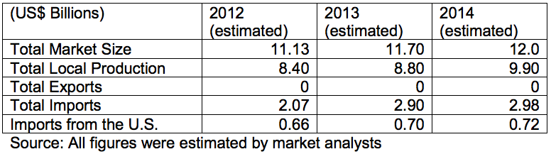

Environmental experts estimate that Brazil’s environmental technologies market (including equipment, engineering / consulting services, instrumentation, construction and clean up services) is around US$ 12 billion, of which US$ 6.2 billion is related to the water and wastewater subsector; solid waste management at US$ 4 billion and air pollution control at US$ 1 billion. The actual market size is only a fraction of the market potential, which is estimated at 1 to 7% of Brazil’s GDP of US$ 2.3 trillion.